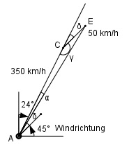

Aufgabe 213 Ein Flugzeug fliegt mit einer Geschwindigkeit von 350 km/h in Richtung N 24° O. Es weht ein Wind aus Südwest mit 50 km/h. Wiegroß ist die wahre Fluggeschwindigkeit v, und welchen Kurs K fliegt dasFlugzeug wirklich?

Der Wind aus SW erhöht die Flugzeuggeschwindig- keit und treibt das Flugzeug nach Osten ab. δ = 90° - 24° - 45° = 21° γ = 180° - 21° = 159° Im Dreieck AEC: Fall SWS: Cosinussatz: AE2 = 3502 + 502 - 2 * 350 * 50 * cos 159° = AE2 = 3502 + 502 - 2 * 350 * 50 * (-0,9336) = AE2 = 157 676 | √ AE = 397,1 km/h = v Fall SSW: Sinussatz: CE AE ------- = ------ |*sin α sin α sin γ AE * sin α CE = ------------- |*sin γ sin γ CE * sin γ = AE * sin α |:AE CE * sin γ 50 km/h * sin 159° sin α = ------------- = -------------------- = AE 397,1 km/h 50 km/h * 0,3584 = ------------------- = 0,045 --> α = 2,6° 397,1 km/h Abweichender Kurs: N (24° + 2,6°) O = N 26,6° O